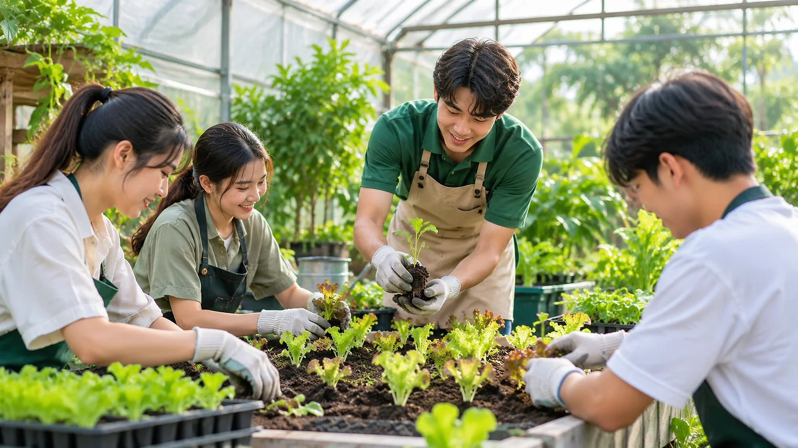

กิจกรรมและข่าวสาร
รวมงานแสดง คอร์สปลูกผัก รางวัล และการเยี่ยมชมของ CIVIO ตั้งแต่ปี 2567 จนถึงปัจจุบัน
 ชุมชน
ชุมชนชวนกันแยกขยะ เริ่มต้นจากความเข้าใจ ส่งต่อความรู้จัดการขยะตั้งแต่ต้นทาง
CiViO ร่วมส่งต่อความรู้เรื่องการคัดแยกขยะอย่างถูกวิธี เพื่อให้ทุกคนเข้าใจและนำไปใช้ได้จริงในชีวิตประจำวัน
ดูรายละเอียด เยี่ยมชม
เยี่ยมชมแลกเปลี่ยนองค์ความรู้ระหว่างประเทศ กับอาจารย์จากเกาหลี
อาจารย์ Jung Hanyeong จากเกาหลี เข้าร่วมแลกเปลี่ยนประสบการณ์และเรียนรู้การปลูกผักอินทรีย์ ควบคู่กับการจัดการเศษอาหารร่วมกับเกษตรกรไทย
ดูรายละเอียด งานแสดง
งานแสดงCiViO ร่วมงาน Sustainable Life 2026 นำเสนอนวัตกรรมเครื่องกำจัดขยะเศษอาหาร
ร่วมงานเพื่อความยั่งยืน นำเสนอเครื่องกำจัดขยะเศษอาหาร พร้อมฟังการบรรยายสร้างแรงบันดาลใจจากคุณทราย สก๊อต
ดูรายละเอียด งานแสดง
งานแสดงCiViO ร่วมลงนามกฎบัตรขยะอาหารไทย ในงาน EARTH JUMP 2026
CiViO ร่วมเป็นส่วนหนึ่งในพิธีลงนามเจตจำนง “กฎบัตรขยะอาหารไทย” เพื่อลดปริมาณขยะอาหารและขับเคลื่อนประเทศไทยสู่ Net Zero
ดูรายละเอียด งานแสดง
งานแสดงCiViO นำเสนอนวัตกรรมเครื่องกำจัดขยะเศษอาหาร ในงานประชุมและสัมมนาทางวิชาการ
บูธ CiViO ได้รับความสนใจจากหน่วยงานและผู้บริหารในงานที่รวมนวัตกรรมล้ำสมัย ทั้งเทคโนโลยีอัจฉริยะและหุ่นยนต์ UniTree
ดูรายละเอียด เยี่ยมชม
เยี่ยมชมสสว. เยี่ยมชม CiviO Farm และนวัตกรรมเครื่องกำจัดขยะเศษอาหาร เพื่อขับเคลื่อนเศรษฐกิจสีเขียวอย่างยั่งยืน
สสว. เข้าเยี่ยมชม CiviO Farm รับฟังแนวทางฟาร์มสีเขียว และชมการสาธิตเครื่องจัดการเศษอาหารด้วยเทคโนโลยี Bio Composer
ดูรายละเอียด ลูกค้า
ลูกค้าเสียงจากผู้ใช้งานจริง โรงงานผลิตภัณฑ์ไอวี่ แชร์ประสบการณ์ใช้เครื่องกำจัดเศษอาหาร CiviO
คุณจตุพลจากโรงงานผลิตภัณฑ์ไอวี่แบ่งปันประสบการณ์ใช้งานเครื่อง CiviO ที่ช่วยจัดการเศษอาหาร ลดกลิ่นและปริมาณขยะในโรงงาน
ดูรายละเอียด งานแสดง
งานแสดงCiviO ร่วมเปิดโลกเกษตรรักษ์โลกในงาน Farm Expo 2568 โชว์นวัตกรรมเครื่องกำจัดขยะเศษอาหาร เปลี่ยนขยะให้เป็นคุณค่า สู่สังคม Zero Waste
CiviO ร่วมจัดแสดงนวัตกรรมในงาน Farm Expo 2568 ระหว่าง 25–28 กันยายน พร้อมนำเสนอเครื่องจัดการเศษอาหารและผลิตภัณฑ์จากฟาร์ม
ดูรายละเอียด รางวัล
รางวัลCiviO คว้ารางวัล “Success Case” จากกรมส่งเสริมอุตสาหกรรม (DIPROM)
CiviO ได้รับรางวัล “Success Case” จากกรมส่งเสริมอุตสาหกรรม ในกิจกรรมสร้างมูลค่าเพิ่มผลิตภัณฑ์เกษตรแปรรูป
ดูรายละเอียด รางวัล
รางวัลCiviO Farm ผ่านการตรวจรับรองมาตรฐาน “Organic Thailand”
CiviO Farm ผ่านการตรวจรับรองมาตรฐาน Organic Thailand จากกรมวิชาการเกษตร ตอกย้ำความตั้งใจในการทำเกษตรอินทรีย์
ดูรายละเอียด เยี่ยมชม
เยี่ยมชมกรมส่งเสริมอุตสาหกรรม (DIPROM) เยี่ยมชม CiviO Farm และหารือแนวทางความร่วมมือด้านการจัดการขยะอย่างยั่งยืน
CiviO ต้อนรับผู้อำนวยการและคณะจาก DIPROM เยี่ยมชม CiviO Farm พร้อมแลกเปลี่ยนแนวทางจัดการขยะอย่างยั่งยืน
ดูรายละเอียด งานแสดง
งานแสดงการจัดแสดงนวัตกรรมเครื่องกำจัดเศษอาหาร Civio ณ โรงแรม Serene Phla จังหวัดระยอง
CiviO นำเสนอเครื่องกำจัดเศษอาหารในงานจัดแสดงนวัตกรรมสิ่งแวดล้อม ณ โรงแรม Serene Phla จังหวัดระยอง โดยมีหน่วยงานภาครัฐและกองทัพไทยให้ความสนใจ
ดูรายละเอียด งานแสดง
งานแสดงCiviO Thailand ร่วมนำเสนอนวัตกรรม เครื่องกำจัดเศษอาหารอัจฉริยะ ในงาน Entech Pollutec Asia 2025
CiviO Thailand ออกบูธ Entech Pollutec Asia 2025 วันที่ 2–4 กรกฎาคม ณ ศูนย์สิริกิติ์ สาธิตเครื่องจริงและแจกตัวอย่างปุ๋ยจากกระบวนการย่อย
ดูรายละเอียด งานแสดง
งานแสดงCivio Thailand ให้สัมภาษณ์กับรายการ Farm Expo
CiviO Thailand ให้สัมภาษณ์กับรายการ Farm Expo เล่าจุดเริ่มต้น แนวคิด และความเป็นมาของนวัตกรรม
ดูรายละเอียด ลูกค้า
ลูกค้าขอขอบคุณ บ้านไร่สุวรรณมาลัย ที่เลือก Civio เพื่อการเปลี่ยนแปลงที่ยั่งยืน
CiviO ขอบคุณบ้านไร่สุวรรณมาลัยที่เลือกใช้เครื่องกำจัดขยะเศษอาหาร เพื่อร่วมวางแนวทางจัดการเศษอาหารอย่างยั่งยืน
ดูรายละเอียด เยี่ยมชม
เยี่ยมชมCivio ผนึกกำลัง Young Smart Farmer สร้างเครือข่ายเกษตรสมาร์ทภาคกลาง
CiviO ร่วมโครงการ Young Smart Farmer สัญจร เชื่อมเกษตรกรรุ่นใหม่ 9 จังหวัด ผ่านเวิร์กช็อปเศษอาหารสู่ผักออร์แกนิกส์
ดูรายละเอียด ลูกค้า
ลูกค้าCIVIO บรรยายเรื่องการจัดการเศษอาหาร ที่บริษัท ไอ.พี. เนเชอรัล โปรดักส์
ทีม CiviO เข้าให้ความรู้เรื่องการจัดการเศษอาหารในองค์กรแก่บริษัท ไอ.พี. เนเชอรัล โปรดักส์
ดูรายละเอียด งานแสดง
งานแสดงงานมหกรรมเกษตรแฟร์สามบุรี @กาญจนบุรี
ผู้บริหาร CiviO นำเสนอเทคโนโลยีจัดการเศษอาหารเพื่อลดคาร์บอนบนเวทีมหกรรมเกษตรแฟร์สามบุรี จังหวัดกาญจนบุรี
ดูรายละเอียด รางวัล
รางวัลCivio คว้ารางวัลชนะเลิศ Agrithon ประจำสัปดาห์
CiviO คว้ารางวัล Champion of the Week ในเวที Agrithon ด้วยนวัตกรรมเครื่องกำจัดขยะเศษอาหาร
ดูรายละเอียด
คอร์สปลูกผักคอร์สสอนปลูกผักอินทรีย์ ร่วมกับ บริษัท ฮีดากาโยโก เอ็นเตอร์ไพรส์
CiviO จัดคอร์สปลูกผักอินทรีย์ร่วมกับฮีดากาโยโก เอ็นเตอร์ไพรส์ ผู้เข้าร่วม 30 คน เรียนตั้งแต่ปรุงดิน เพาะกล้า จนวางแผนพื้นที่ปลูก
ดูรายละเอียด โรงเรียน
โรงเรียนกิจกรรมสอนเด็กอนุบาล ปลูกผักอินทรีย์ ที่ CIVIO FARM
กิจกรรมเด็กอนุบาลที่ CiviO Farm วันที่ 13–14 กุมภาพันธ์ 2568 เรียนรู้ปลูกผัก ให้อาหารเต่า และรู้จักการนำเปลือกแตงโมเข้าเครื่อง CiviO
ดูรายละเอียด เยี่ยมชม
เยี่ยมชมทีมงาน CIVIO พร้อมลุย เพื่อสิ่งแวดล้อมที่ดีกว่า กับหน่วยงานราชการ
ทีม CiviO เผยแพร่กิจกรรมการทำงานร่วมกับหน่วยงานภาครัฐ โดยมุ่งสนับสนุนแนวทางจัดการเศษอาหารและสิ่งแวดล้อม
ดูรายละเอียดขอบคุณทีมบ้านไร่สุวรรณมาลัย จ.นครสวรรค์ คอร์สสอนปลูกผัก รุ่นที่ 7
บ้านไร่สุวรรณมาลัยเข้าร่วมคอร์สปลูกผักอินทรีย์ CiviO Farm รุ่นที่ 7 เรียนรู้การปลูกผักและต่อยอดการใช้วัสดุอินทรีย์
ดูรายละเอียดคณะอาจารย์โรงเรียนสาธิตบางนา เรียนคอร์สปลูกผักที่ Civio Farm รุ่นที่ 6
คณะอาจารย์จากโรงเรียนสาธิตบางนาเข้าร่วมคอร์สปลูกผักอินทรีย์ที่ CiviO Farm เพื่อเรียนรู้การทำแปลงและการปลูกผัก
ดูรายละเอียดคอร์สสอนปลูกผักอินทรีย์ CIVIO FARM รุ่นที่ 5
คอร์สปลูกผักอินทรีย์ CiviO Farm รุ่นที่ 5 เน้นสอนตั้งแต่พื้นฐานและให้ผู้เรียนลงมือทำจริง
ดูรายละเอียด งานแสดง
งานแสดงEnwaste Expo 2024 งานแสดงสินค้าและสัมมนาด้านสิ่งแวดล้อม
CiviO ร่วม Enwaste Expo 2024 ระหว่าง 13–15 พฤศจิกายน นำเสนอเครื่องจัดการขยะอินทรีย์สำหรับองค์กรและอุตสาหกรรม
ดูรายละเอียดกิจกรรมสอนปลูกผักอินทรีย์ CIVIO FARM รุ่นที่ 4
CiviO Farm จัดคอร์สสอนปลูกผักอินทรีย์รุ่นที่ 4 สอนปรุงดิน เพาะต้นกล้า และย้ายต้นกล้าลงปลูก เน้นปฏิบัติจริง
ดูรายละเอียด โรงเรียน
โรงเรียนกิจกรรมเรียนรู้นอกห้องเรียน เด็กนักเรียนอนุบาล LBS
กิจกรรมเรียนรู้นอกห้องเรียนของเด็กอนุบาล LBS ที่ CiviO Farm ผ่านธรรมชาติ สวนผัก การให้อาหารเต่า และกิจกรรมเสริมพัฒนาการ
ดูรายละเอียด งานแสดง
งานแสดงFarm Expo 2024 สัมผัสโลกการเกษตรยุคใหม่
CiviO ร่วมงาน Farm Expo 2024 เวทีพบเทคโนโลยี ผลิตภัณฑ์ และบริการด้านการเกษตรยุคใหม่
ดูรายละเอียด โรงเรียน
โรงเรียนโรงเรียนสองภาษาลาดพร้าว นำเครื่องกำจัดขยะเศษอาหารมาจัดการเศษอาหาร
โรงเรียนสองภาษาลาดพร้าวนำเครื่อง CiviO ไปจัดการเศษอาหาร พร้อมใช้เป็นสื่อเรียนรู้เรื่องการลดขยะตั้งแต่ต้นทางให้ครูและนักเรียน
ดูรายละเอียด โรงเรียน
โรงเรียนจัดกิจกรรมการเรียนรู้ที่โรงเรียนอนุบาล LBS
CiviO ร่วมกิจกรรมที่โรงเรียนอนุบาล LBS ให้เด็กเรียนรู้การปลูกผักและธรรมชาติผ่านการลงมือทำในพื้นที่โรงเรียน
ดูรายละเอียด เยี่ยมชม
เยี่ยมชมร่วมประชุมกับคณาจารย์คณะบริหารธุรกิจ มหาวิทยาลัยหอการค้าไทย
CiviO แลกเปลี่ยนกับคณาจารย์คณะบริหารธุรกิจ มหาวิทยาลัยหอการค้าไทย พร้อมแนะนำเทคโนโลยีจัดการเศษอาหารจากประสบการณ์ใช้งานจริง
ดูรายละเอียด งานแสดง
งานแสดงSETA 2024 งานแสดงพลังงานและเทคโนโลยีที่ยั่งยืนแห่งเอเชีย
CiviO ร่วมงาน SETA 2024 งานแสดงพลังงานและเทคโนโลยียั่งยืนแห่งเอเชีย นำเสนอนวัตกรรมจัดการขยะอินทรีย์
ดูรายละเอียดคอร์สสอนปลูกผักอินทรีย์ รุ่นที่ 3 กับ Civio Farm
คอร์สปลูกผักอินทรีย์ CiviO Farm รุ่นที่ 3 เรียนตั้งแต่เตรียมดิน เพาะกล้า ย้ายปลูก ดูแลจนถึงเก็บเกี่ยว พร้อมวางแผนโรงเรือนและต้นทุน
ดูรายละเอียด เยี่ยมชม
เยี่ยมชมอินฟลูเอนเซอร์สาวมาเยี่ยมชมสวนผักที่ CIVIO FARM
CiviO Farm ต้อนรับอินฟลูเอนเซอร์สายสุขภาพเข้าเยี่ยมชมสวนผักและทำความรู้จักพื้นที่ฟาร์ม
ดูรายละเอียดขอบคุณศิษย์ทุกท่าน คอร์สสอนปลูกผักอินทรีย์ รุ่นที่ 2
คอร์สปลูกผักอินทรีย์ CiviO Farm รุ่นที่ 2 เรียนตั้งแต่ปรุงดิน เพาะกล้า ปลูก ดูแลและเก็บเกี่ยว พร้อมพื้นฐานการออกแบบโรงเรือน
ดูรายละเอียดต้อนรับลูกศิษย์ CiviO FARM รุ่นที่ 1
CiviO Farm ต้อนรับผู้เรียนคอร์สปลูกผักรุ่นแรก เปิดพื้นที่ฟาร์มกลางเมืองเพื่อแบ่งปันความรู้ด้านการปลูกผัก
ดูรายละเอียดยังไม่มีกิจกรรมในหมวดนี้